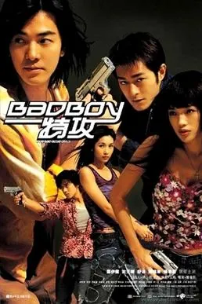

The genetics
Genetic experimentation explains the mystery of the identical women in this action romantic comedy. The Japanese scientist Taro Sakamoto takes DNA from the body of Koon Ching, a top fighter pilot, and injects it into Shadow in the hope of producing a woman with the same skills; the experiment fails and disfigures her. He also produces dozens of clones, numbered and each carrying different mutations, of whom Eleven is the only 'perfect' one, and he manipulates her into attacking the heroes. Sakamoto is cast in the role of the villainous scientist who kidnaps and experiments on women, though the source gives no details of his motives beyond creating a skilled pilot or of his fate. Injecting DNA into an adult to transfer skills, and cloning that copies learned abilities, are fantasy.
How genetics is portrayed
- Overall portrayal of genetics
- negative Genetic work is the domain of a scientist who kidnaps and experiments on women; its products are disfigured victims and mutant clones.
- Outcome of the genetic intervention
- negative The DNA injection disfigures Shadow, the clones are born with mutations, and Eleven is manipulated into attacking King and Jack.
- Taro Sakamoto
- villain Aim: not stated (not applicable). He kidnaps Shadow and injects her with a pilot's DNA to copy her skills, creates numbered mutant clones and turns Eleven against the heroes; why he wants such a pilot is not stated in the source, but his staging as the antagonist the heroes must confront is clear.
The story
King Chan and his partner Jack Shum run For Bad Boys Only, an unconventional Hong Kong detective agency that reunites clients with their first loves, with King's sister Queen as their only employee. Two clients hire them at once: a Taiwanese tycoon looking for his former lover Koon Ching, once Asia's top female air force pilot, and a young man, Tin-ngai, looking for his missing girlfriend Shadow. The two women look identical, and so does Eleven, an amnesiac girl King meets and falls in love with. King and Eleven are repeatedly attacked, and Eleven is captured by armed men. Tin-ngai finds Shadow disfigured: the Japanese scientist Taro Sakamoto had injected her with DNA taken from Koon Ching's body, trying to create a pilot with her skills. Breaking into Sakamoto's base, King and Jack find dozens of numbered clones of Eleven, each with different mutations, and Sakamoto drives Eleven mad so that she attacks them.